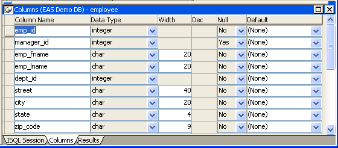
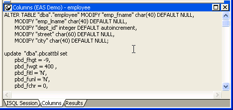

When you open the Database painter, the Object view lists all tables in the current database that you have access to (including tables that were not created using PowerBuilder). You can create a new table or alter an existing table. You can also modify table properties and work with indexes and keys.
In PowerBuilder, you can create a new table in any database to which PowerBuilder is connected.
 To create a table in the current database:
To create a table in the current database:
The new table template displays in the Columns view. What you see in the view is DBMS-dependent.You use this template to specify each column in the table. The insertion point is in the Column Name box for the first column.
Enter the required information for this column.
For what to enter in each field, see "Specifying column definitions".
As you enter information, use the Tab key to move from place to place in the column definition. After defining the last item in the column definition, press the Tab key to display the work area for the next column.
Repeat step 2 for each additional column in your table.
(Optional) Select Object>Pending SQL from the menu bar or select Pending SQL from the pop-up menu to see the pending SQL syntax.
If you have not already named the table, you must provide a name in the dialog box that displays. To hide the SQL syntax and return to the table columns, select Object>Pending Syntax from the menu bar.
Click the Save button or select Save from the File or pop-up menu, then enter a name for the table in the Create New Table dialog box.
PowerBuilder submits the pending SQL syntax statements it generated to the DBMS, and the table is created. The new table is displayed in the Object Layout view.
 About saving the table If you make changes after you save the table and before you
close it, you see the pending changes when you select Pending SQL again. When you click Save again, PowerBuilder submits
a DROP TABLE statement to the DBMS, recreates
the table, and applies all changes that are pending. Clicking Save
many times can be time consuming when you are working with large
tables, so you might want to save only when you have finished.
About saving the table If you make changes after you save the table and before you
close it, you see the pending changes when you select Pending SQL again. When you click Save again, PowerBuilder submits
a DROP TABLE statement to the DBMS, recreates
the table, and applies all changes that are pending. Clicking Save
many times can be time consuming when you are working with large
tables, so you might want to save only when you have finished.
Specify extended attributes for the columns.
For what to enter in each field, see "Specifying column extended attributes".
You can create a new table that is similar to an existing table very quickly by using the Save Table As menu option.
 To create a new table from an existing table:
To create a new table from an existing table:
Open the existing table in the Columns view by dragging and dropping it or selecting Alter Table from the pop-up menu.
Right-click in the Columns view and select Save Table As from the pop-up menu.
Enter a name for the new table and then the owner's name, and click OK.
The new table appears in the Object Layout view and the Columns view.
Make whatever changes you want to the table definition.
Save the table.
Make changes to the table's properties in the Object Details view.
For more information about modifying table properties, see "Specifying table and column properties".
When you create a new table, you must specify a definition for each column. The fields that display for each column in the Columns view depend on your DBMS. You might not see all of the following fields, and the values that you can enter are dependent on the DBMS.
For more information, see your DBMS documentation.
After you create and save a table, you can specify the properties of the table and of any or its columns. Table properties include the fonts used for headers, labels, and data, and a comment that you can associate with the table. Column properties include the text used for headers and labels, display formats, validation rules, and edit styles used for data (also known as a column's extended attributes), and a comment you can associate with the column.
In addition to adding a comment to associate with the table, you can choose the fonts that will be used to display information from the table in a DataWindow object. You can specify the font, point size, color, and style.
 To specify table properties:
To specify table properties:
The properties for the table display in the Object Details view.
Select a tab and specify properties:
Right-click on the Object Details view and select Save Changes from the pop-up menu.
Any changes you made in the Object Details view are immediately saved to the table definition.
In addition to adding a comment to associate with a column, you can specify extended attributes for each column. An extended attribute is information specific to PowerBuilder that enhances the definition of the column.
 To specify extended attributes:
To specify extended attributes:
Select a tab and specify extended attribute values:
Right-click on the Column property sheet and select Save Changes from the pop-up menu.
Any changes you made in the property sheet are immediately saved to the table definition.
 Overriding definitions In the DataWindow painter, you can override the extended attributes
specified in the Database painter for a particular DataWindow object.
Overriding definitions In the DataWindow painter, you can override the extended attributes
specified in the Database painter for a particular DataWindow object.
Extended attributes are stored in the PowerBuilder system tables in the database. PowerBuilder uses the information to display, present, and validate data in the Database painter and in DataWindow objects. When you create a view in the Database painter, the extended attributes of the table columns used in the view are used by default.
In the Database painter, you create display formats, edit styles, and validation rules. Whatever you create is then available for use with columns in tables in the database. You can see all the display formats, edit styles, and validation rules defined for the database in the Extended Attributes view.
For more information about defining, maintaining, and using these extended attributes, see Chapter 22, "Displaying and Validating Data ."
By default, PowerBuilder uses the column names as labels and headings, replacing any underscore characters with spaces and capitalizing each word in the name. For example, the default heading for the column Dept_name is Dept Name. To define multiple-line headings, press Ctrl+Enter to begin a new line.
You can also set two additional properties for character columns on the Display property page: Case and Picture.
You can specify whether PowerBuilder converts the case of characters for a column in a DataWindow object.
 To specify how character data should be displayed:
To specify how character data should be displayed:
On the Display property page, select a value in the Case drop-down list:
| Value | Meaning |
|---|---|
| Any | Characters are displayed as they are entered |
| UPPER | Characters are converted to uppercase |
| lower | Characters are converted to lowercase |
You can specify that a character column can contain names of picture files.
 To specify that column values are names of picture
files:
To specify that column values are names of picture
files:
On the Display property page, select the Picture check box.
When the Picture check box is selected, PowerBuilder expects to find picture file names in the column and displays the contents of the picture file—not the name of the file—in reports and DataWindow objects.
Because PowerBuilder cannot determine the size of the image until runtime, it sets both display height and display width to 0 when you select the Picture check box.
Enter the size and the justification for the picture (optional).
After a table is created, how you can alter the table depends on your DBMS.
Some DBMSs let you do the following, but others do not:
 Database painter is DBMS aware The Database painter grays out or notifies you about actions that
your DBMS prohibits.
Database painter is DBMS aware The Database painter grays out or notifies you about actions that
your DBMS prohibits.
For complete information about what you can and cannot do when you modify a table in your DBMS, see your DBMS documentation.
 To alter a table:
To alter a table:
Highlight the table and select Alter Table from the pop-up menu.
 Opening multiple instances of tables You can open another instance of a table by selecting Columns
from the View menu. Doing this is helpful when you want to use the Database painter's
cut, copy, and paste features to cut or copy and paste between tables.
Opening multiple instances of tables You can open another instance of a table by selecting Columns
from the View menu. Doing this is helpful when you want to use the Database painter's
cut, copy, and paste features to cut or copy and paste between tables.
The table definition displays in the Columns view (this screen shows the Employee table).

Make the changes you want in the Columns view or in the Object Details view.
Select Save Table or Save Changes.
PowerBuilder submits the pending SQL syntax statements it generated to the DBMS, and the table is modified.
In the Database painter, you can use the Cut, Copy, and Paste buttons in the PainterBar (or Cut, Copy, and Paste from the Edit or pop-up menu) to cut, copy, and paste one column at a time within a table or between tables.
 To cut or copy a column within a table:
To cut or copy a column within a table:
Put the insertion point anywhere in the column you want to cut or copy.
Click the Cut or Copy button in the PainterBar.
 To paste a column within a table:
To paste a column within a table:
Put the insertion point in the column you want to paste to.
If you are changing an existing table, put the insertion point in the last column of the table. If you try to insert a column between two columns, you get an error message. To an existing table, you can only append a column. If you are defining a new table, you can paste a column anywhere.
Click the Paste button in the PainterBar.
 To paste a column to a different table:
To paste a column to a different table:
Open another instance of the Columns view and use Alter Table to display an existing table or click New to create a new table.
Put the insertion point in the column you want to paste to.
Click the Paste button in the PainterBar.
You can remove a table from a view by selecting Close or Reset View from its pop-up menu. This action only removes the table from the Database painter view. It does not drop (remove) the table from the database.
Dropping removes the table from the database.
 To drop a table:
To drop a table:
Select Drop Table from the table's pop-up menu or select Object>Delete from the menu bar.
Click Yes.
If you drop a table outside PowerBuilder, information remains in the system tables about the table, including extended attributes for the columns.
 To delete orphaned table information from the
extended attribute system tables:
To delete orphaned table information from the
extended attribute system tables:
Select Design>Synch Extended Attributes from the menu bar and click Yes.
If you try to delete orphaned table information and there is none, a message tells you that synchronization is not necessary.
As you create or alter a table definition, you can view the pending SQL syntax changes that will be made when you save the table definition.
 To view pending SQL syntax
changes:
To view pending SQL syntax
changes:
Right-click the table definition in the Columns view and select Pending Syntax from the pop-up menu.
PowerBuilder displays the pending changes to the table definition in SQL syntax:

The SQL statements execute only when you save the table definition or reset the view and then tell PowerBuilder to save changes.
When you are viewing pending SQL changes, you can:
 To copy, save, or print only part of the SQL syntax Select the part of the SQL syntax
you want before you copy, save, or print.
To copy, save, or print only part of the SQL syntax Select the part of the SQL syntax
you want before you copy, save, or print.
 To copy the SQL syntax
to the clipboard:
To copy the SQL syntax
to the clipboard:
In the Pending Syntax view, click the Copy button or select Copy from the pop-up menu.
 To save SQL syntax
for execution at a later time:
To save SQL syntax
for execution at a later time:
In the Pending Syntax view, Select File>Save As.
The Save Syntax to File dialog box displays.
Navigate to the folder where you want to save SQL, name the file, and then click the Save button.
At a later time, you can import the SQL file into the Database painter and execute it.
 To print pending table changes:
To print pending table changes:
While viewing the pending SQL syntax, click the Print button or select Print from the File menu.
 To display columns in the Columns view:
To display columns in the Columns view:
Select Object>Pending Syntax from the menu bar.
You can print a report of the table's definition at any time, whether or not the table has been saved. The Table Definition Report contains information about the table and each column in the table, including the extended attributes for each column.
 To print the table definition:
To print the table definition:
Select Print or Print Definition from the File or pop-up menu or click the Print button.
You can export the syntax for a table to the log. This feature is useful when you want to create a backup definition of the table before you alter it or when you want to create the same table in another DBMS.
To export to another DBMS, you must have the PowerBuilder interface for that DBMS.
 To export the syntax of an existing table to a
log:
To export the syntax of an existing table to a
log:
Select the table in the Objects or Object Layout view.
Select Export Syntax from the Object menu or the pop-up menu.
If you selected a table and have more than one DBMS interface installed, the DBMS dialog box displays. If you selected a view, PowerBuilder immediately exports the syntax to the log.
Select the DBMS to which you want to export the syntax.
If you selected ODBC, specify a data source in the Data Sources dialog box.
Supply any information you are prompted for.
PowerBuilder exports the syntax to the log. Extended attribute information (such as validation rules used) for the selected table is also exported. The syntax is in the format required by the DBMS you selected.
For more information about the log, see "Logging your work".
Two kinds of system tables exist in the database:
PowerBuilder stores extended attribute information you provide when you create or modify a table (such as the text to use for labels and headings for the columns, validation rules, display formats, and edit styles) in system tables. These system tables contain information about database tables and columns. Extended attribute information extends database definitions.
In the Employee table, for example, one column name is Emp_lname. A label and a heading for the column are defined for PowerBuilder to use in DataWindow objects. The column label is defined as Last Name:. The column heading is defined as Last Name. The label and heading are stored in the PBCatCol table in the extended attribute system tables.
The extended attribute system tables are maintained by PowerBuilder and only PowerBuilder users can enter information into them. Table 16-6 lists the extended attribute system tables. For more information, see Appendix A, "The Extended Attribute System Tables"
You can open system tables like other tables in the Database painter.
By default, PowerBuilder shows only user-created tables in the Objects view. If you highlight Tables and select Show System Tables from the pop-up menu, PowerBuilder also displays system tables.
You can create and edit temporary tables in the Database painter, SQL Select painter, or DataWindow painter when you use the PowerBuilder ASE or SYC native driver to connect to an ASE database. Temporary tables persist for the duration of a database connection, residing in a special database called "tempdb".
You add a temporary table to the tempdb database by assigning a name that starts with the # character when you create a new table in a painter. (Temporary tables must start with the # character.)
After you create a temporary table, you can create indexes and a primary key for the table from the pop-up menu for the table in the Object Layout view. If you define a unique index or primary key, you can perform insert, update, and delete operations in DataWindow objects.
Selecting Edit Data from the pop-up menu of a temporary table retrieves data that you store in that table. You can also select Drop Table, Add to Layout, Export Syntax, and properties from the pop-up menu in the Objects view.
 Standard catalog query limitations When you click Refresh from the pop-up menu for the Tables
node in the Database painter or the Objects view of the DataWindow painter, the
list of tables displays temporary tables even though they exist
only in the tempdb database. However, once
you refresh table definitions from the database, the Objects view
can no longer list the index or primary key information of the temporary
tables, and the Layout view can no longer display that information graphically.
Standard catalog query limitations When you click Refresh from the pop-up menu for the Tables
node in the Database painter or the Objects view of the DataWindow painter, the
list of tables displays temporary tables even though they exist
only in the tempdb database. However, once
you refresh table definitions from the database, the Objects view
can no longer list the index or primary key information of the temporary
tables, and the Layout view can no longer display that information graphically.
You can create DataWindow objects that access temporary tables in a PowerBuilder runtime application, but your application must first explicitly create the temporary tables, along with the appropriate keys and indexes, using the same database transaction object used by the DataWindow.
You can use the EXECUTE IMMEDIATE PowerScript syntax to create temporary tables at runtime:
string s1, s2, s3, s4
s1 = 'create table dbo.#temptab1 (id int not null, ' &
+ 'lname char(20) not null) '
s2 = 'alter table dbo.#temptab1 add constraint idkey' &
+ ' primary key clustered (id) '
s3 = 'create nonclustered index nameidx on ' &
+ 'dbo.#temptab1 (lname ) '
s4 = 'insert into #temptab1 select emp_id, ' &
+ 'emp_lname from qadb_emp'
execute immediate :s1 using sqlca;
if sqlca.sqlcode = 0 then
execute immediate :s2 using sqlca;
execute immediate :s3 using sqlca;
execute immediate :s4 using sqlca;
else
messagebox("Create error", sqlca.sqlerrtext)
end if